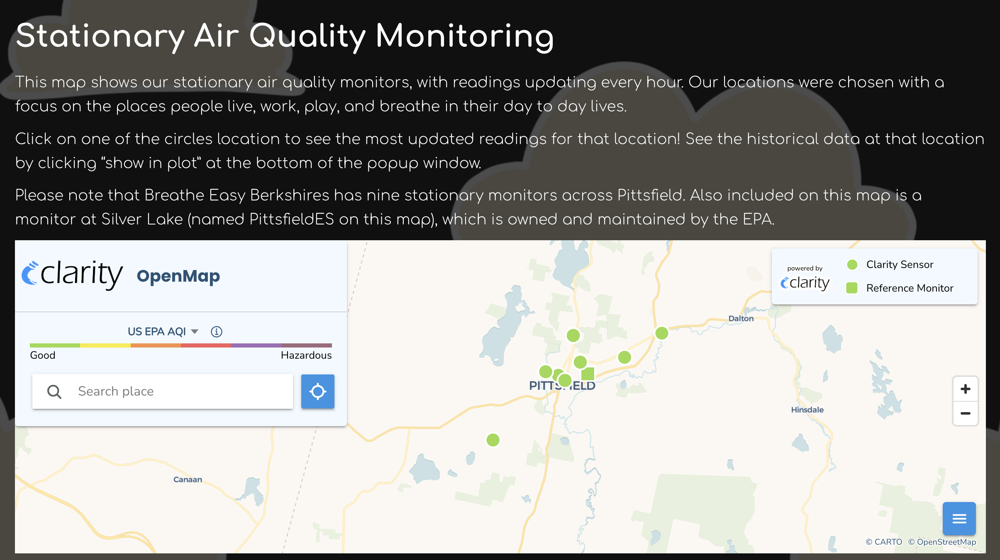
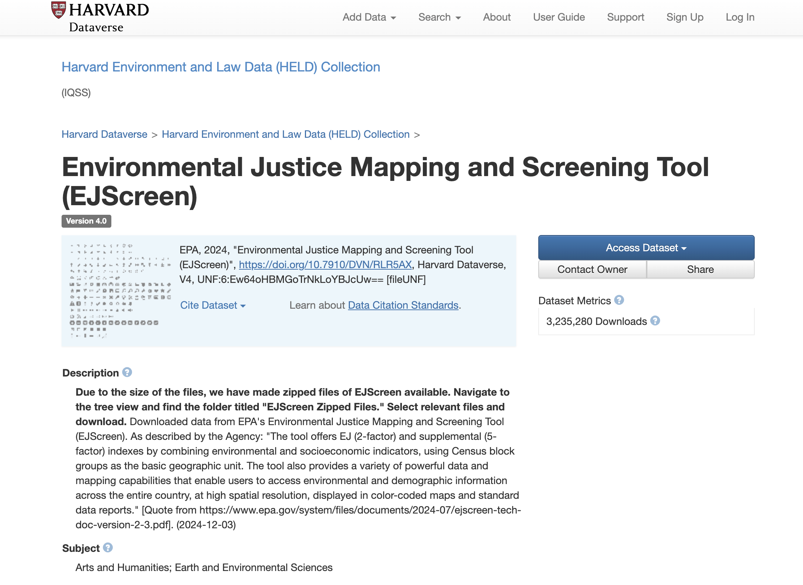

Activity 1
of 4
Introduction
2 min readGet to this page:
https://bit.ly/gis-health
Workshop objectives and outline
In this course, you will learn:
| Lesson | Competency |
|---|---|
| Introduction | Workshop housekeeping; Introduce QGIS software; Grounding examples |
| Searching for and understanding GIS data | Utilize geospatial data portals; Leverage geospatial metadata |
| Opening and Understanding GIS Files | Understand the structure of spatial data |
| Visualizing GIS Data | Map symbology tips; Visualize nominal and interval data |
Workshop requirements
- No prior geospatial knowledge is required for this workshop
- This workshop does not require any specialized software to participate, other than a standard web browser (Chrome, Firefox, etc.)
- Each competency covered will have practical GIS applications live demonstrated by the instructor. Follow-along steps and sample data are included in these course materials. Following along with the data and software on your own computer (in class, or later at home) is optional. To do so, download the free, open source desktop GIS software called QGIS.
- The instructor will give a brief overview of the QGIS software at the beginning of class to familiarize the software environment.
- The instructor will give an overview of the data source, the Harvard Geospatial Library (HGL).
GIS Relevancy Example #1

breatheasyberkshires.org- The Berkshire Environmental Action Team (BEAT) is a non-profit engaged in environmental advocacy work.
- They have a program called Breathe Easy Berkshires that utilizes GIS data analysis towards their mission.
- They have installed air quality monitors around the town of Pittsfield, MA.
- BEAT uses supplementary data from the EPA about “peaker plants,” or power plants that operate only when there is a high demand for electricity on the grid. There is one of these plants in Pittsfield, MA.
- The EPA dataset has information about what times these plants are operating (peak times).
- Spatial analysis helps identify relationships between areas that have worse air quality compared against peak power plant times.
- The outputs of this analysis help BEAT connect with community members and work towards healthier environmental conditions for the residents of Pittsfield.

- This type of work also relies on datasets that have been archived in Harvard’s Dataverse, such as EJScreen, and other research data partnerships, such as details on hospitalizations.
Follow-up
- Make an appointment on the Harvard Map Collection website
- Email the instructor, Belle Lipton @ belle_lipton@harvard.edu
- Search for datasets in the Harvard Geospatial Library
- Request other datasets
- Take the workshop survey